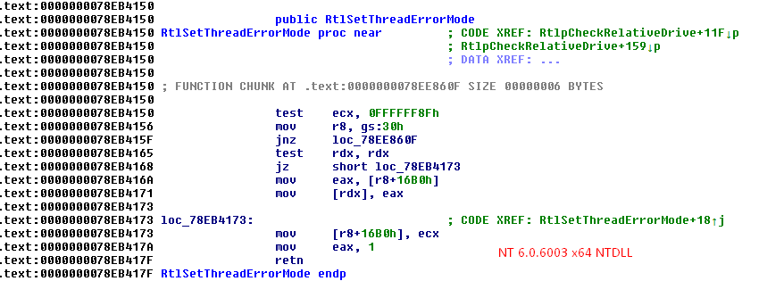
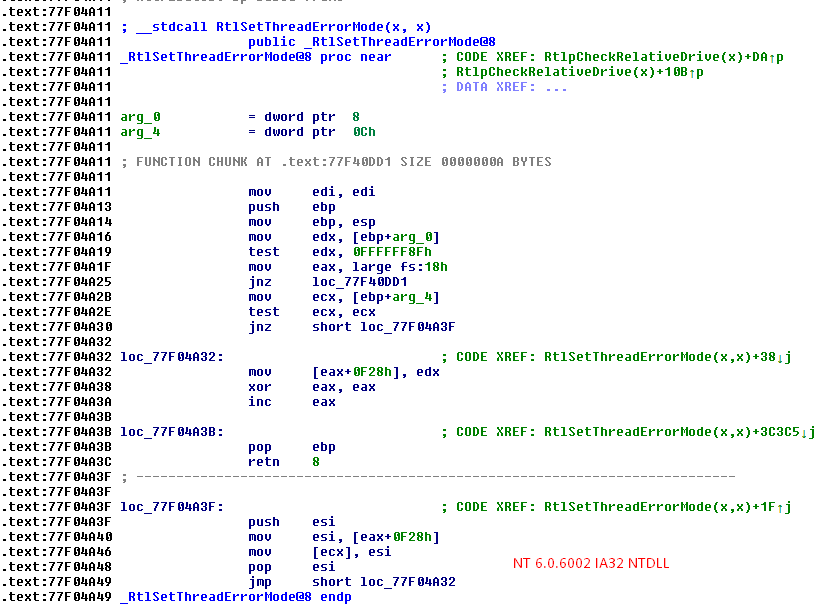
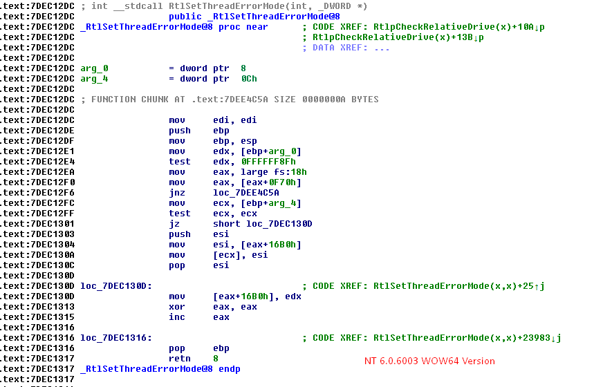

GdiBatchCount displaced in WOW64 TEB by pointer to TEB64!
Offset 0xF70 in 32-bit TEBs is widely considered to include a DWORD called GdiBatchCount.
That is most likely true in native 32-bit releases of Windows NT, but not for WOW64 components
of native 64-bit releases.
I made this discovery when reversing RtlSetThreadErrorMode and its win32 subsystem base DLL (kernel32.dll)
counterpart, SetThreadErrorMode. Here is the native x64 version of RtlSetThreadErrorMode from NT 6.0.6003:

It is very simple; verify the first parameter to make sure that it only has any of the three valid enums[1] (and if not return
STATUS_INVALID_PARAMETER_1), check for a null pointer in the second parameter (and if it's not null, feed it the second parameter
featuring the old value of Teb->HardErrorMode), then update Teb->HardErrorMode and return TRUE, even though it is not a proper NTSTATUS value; this
was corrected in Windows 7 (x64).
I then disassembled the NT 6.0.6003 (Vista/Server 2008) WOW64 ntdll.dll and the NT 6.0.6002 IA32 ntdll.dll to see their implementations
of the function.
The IA32 variant returns STATUS_SUCCESS instead of TRUE, and shows that Teb32->HardErrorMode is at offset 0xF28.

The WOW64 variant is a bit surprising:

Instead of functioning similar to the IA32 variant, a pointer located at TEB32 offset 0xF70 is obtained, then the HardErrorMode variable
is manipulated at its 64-bit offset from the dereferenced pointer; this means that a TEB64 struct pointer is present there.
I don't intend to question the merit of having a TEB64 pointer in the WOW64 TEB32; the "true" TEB is TEB64 for all applications on 64-bit
Windows, and it is the only TEB the kernel will receive.
Where is GdiBatchCount now?
In the NT 6.0.6002 IA32 version of gdi32.dll, Teb32->GdiBatchCount is referenced in a few functions, such as SetBrushOrgEx(). The WOW64 version grabs GdiBatchCount from the TEB64 pointer in the TEB32.
So, if you have a 32-bit application that looks up GdiBatchCount, remember this little quirk that it will encounter if running in WOW64 mode.
With dozens of references to this TEB64 pointer in the WOW64 variant of gdi32, it is likely that the consolidation of GDI/win32 subsystem
specific data into the 64-bit TEB struct for all win32 applications was the driving force for displacing GdiBatchCount.
[1] The three valid enums for RtlSetThreadErrorMode are at:
0x10, which maps to SEM_FAILCRITICALERRORS in SetThreadErrorMode;
0x20, which maps to SEM_NOGPFAULTERRORBOX in SetThreadErrorMode;
0x40, which maps to SEM_NOOPENFILEERRORBOX in SetThreadErrorMode